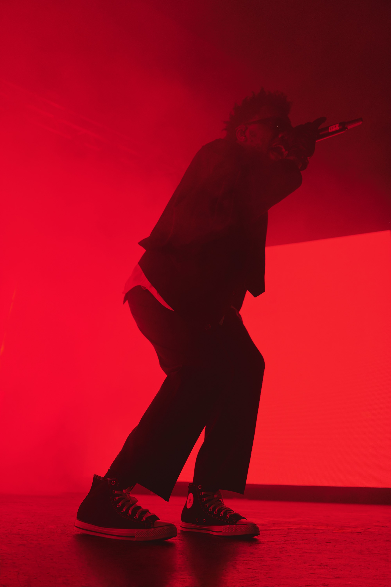
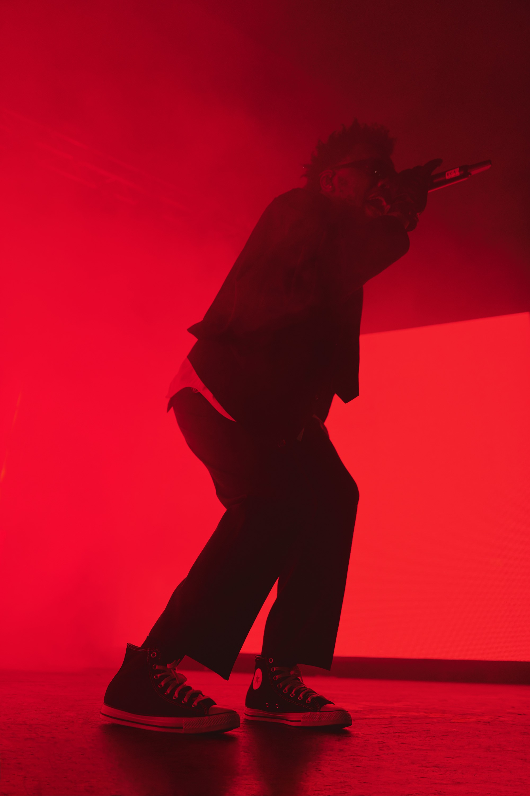
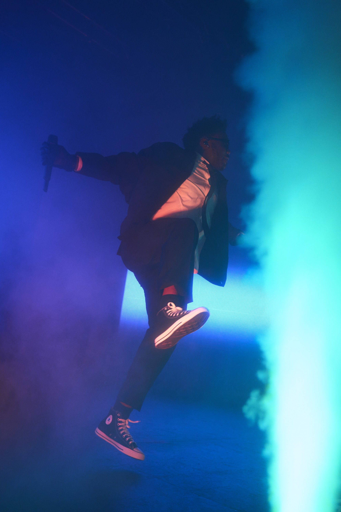
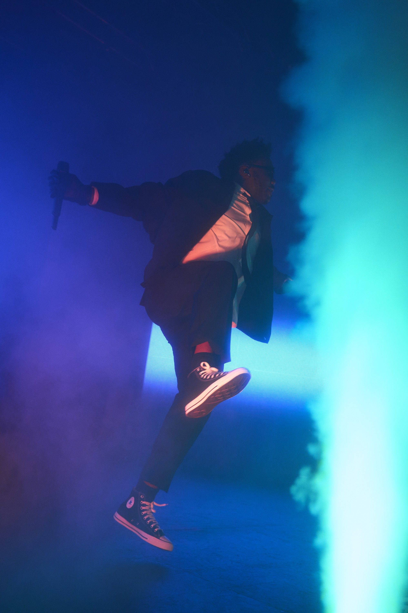
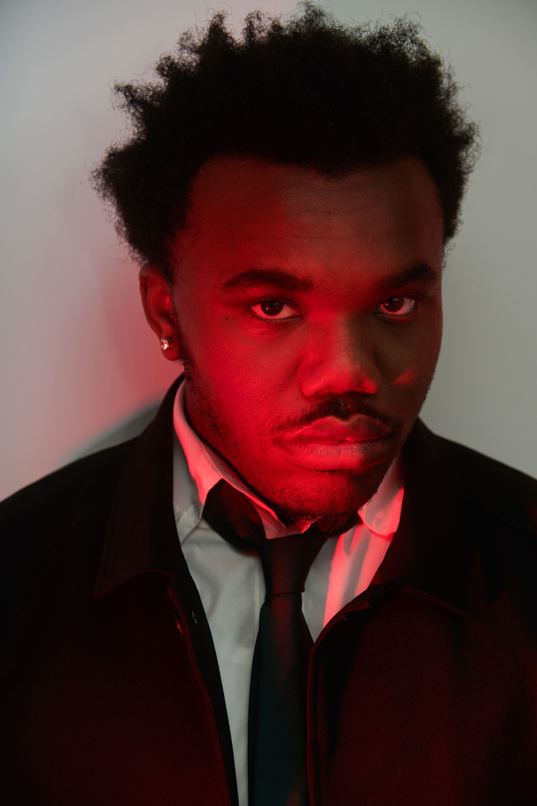
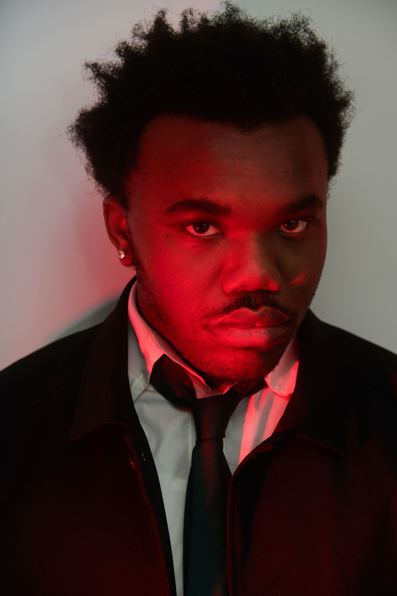

Stories
Impact
Company
Newsroom
September 28, 2022

Converse Welcomes Baby Keem to Its Creative Community
21-year-old artist and producer, Baby Keem has joined Converse’s creative community. He is the latest member of an expanding roster comprised of progressive voices in music, sport and culture, some of whom include Tyler, The Creator, Natasha Cloud, pgLang, Shai Gilgeous-Alexander and Alexis Sablone.
With Converse, Keem will explore multiple dimensions of the iconic Chuck Taylor All Star. In addition, he will partner with Converse on unique experiences with the Converse All Stars, the brand’s creator community, giving emerging talent access to mentorship, experiences and opportunities.

 


 


 
